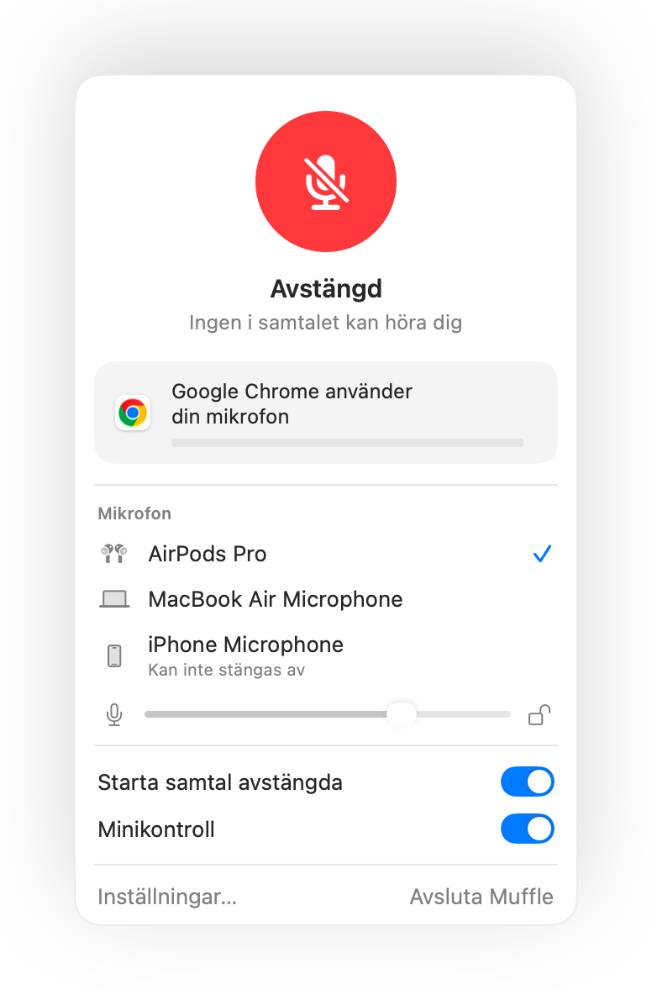

Fungerar det inte att stänga av mikrofonen med AirPods på Mac? Här är lösningen
macOS låter dig stänga av mikrofonen under ett samtal genom att trycka på skaftet på dina AirPods, men bara om samtalsappen har stöd för det. Många saknar detta, däribland Chrome och webbaserade videomöten. Du trycker, hör ett felljud, ser meddelandet ”Kan inte styra mikrofon” och de andra i samtalet hör dig fortfarande.
Muffle lägger till detta stöd för alla appar. Appen fångar upp tryckningen, stänger av mikrofonen på din Mac och spelar upp det vanliga ljudet för mute.
Stäng av mikrofonen med AirPods i alla appar
- 1
Installera Muffle och tillåt mikrofonåtkomst. macOS skickar bara vidare tryckningen till appar som får använda mikrofonen.
- 2
Kontrollera att ”Stäng av och slå på med en tryckning på dina AirPods” är aktiverat i Muffle-inställningar.
- 3
Gå med i ett samtal. Tryckningen stänger bara av mikrofonen när en app faktiskt använder den.
- 4
Tryck på skaftet en gång för att stänga av och en gång till för att slå på.

- Utanför samtal startar och pausar tryckningen musiken precis som vanligt.
- Om dina AirPods använder en annan tryckning för samtalskontroller kan du kontrollera inställningarna för AirPods i Systeminställningar.
Frågor
Varför spelar min Mac upp ett felljud när jag trycker på mina AirPods?
Appen du använder för samtalet stöder inte mute via AirPods, så macOS avvisar kommandot. Med Muffle igång stänger tryckningen av mikrofonen i stället.
Vilka AirPods har stöd för att stänga av mikrofonen med en tryckning?
AirPods Pro, AirPods (3:e generationen) och senare, AirPods Max samt Beats-modeller med samtalskontroller.